Families represent the first institution we encounter upon arriving in the world, and, in most societies until recently, they have provided the central organizing framework for most people’s lives. So, it makes sense that they might play a foundational role in shaping our minds and behavior. In Chapter 1, I showed global patterns of psychological variation in domains ranging from individualism, conformity, and guilt to impersonal trust, analytical thinking, and the use of intentionality in moral judgments. Here, I begin to lay down the evidence that this psychological variation arises, in part, as our minds adapt and calibrate to the culturally-constructed environments we confront, especially while growing up. We’ll examine how intensive kin-based institutions influence people’s psychology and, more specifically, how the Church’s dismantling of intensive kinship in medieval Europe inadvertently pushed Europeans, and later populations on other continents, toward a WEIRDer psychology.
To accomplish this, I’ll first lay out two ways of measuring the intensity of kin-based institutions for different ethnolinguistic groups and countries around the world. Then, using a wide-angle lens, I’ll show that kinship intensity can explain significant chunks of the cross-national psychological variation highlighted in Chapter 1. You’ll see that the weaker a population’s traditional kin-based institutions, the WEIRDer their psychology is today. Next, I’ll use the historical spread of the Church to create a measure of the duration of the Marriage and Family Program for every country in the world. Think of this as a time-release dosage of the MFP, measured in centuries of exposure to the Church. Using this historical dosage measure, we’ll first see that the stronger the MFP dosage ingested by a population, the weaker their kin-based institutions. Finally, we’ll directly connect these MFP dosages to contemporary psychological differences. Strikingly, the stronger the historical MFP dosage for a population, the WEIRDer their psychology is today.
In the next chapter, I’ll focus on the psychological variation within Europe, and even within European countries, as well as within China and India. These analyses not only confirm the expected relationships between psychological variation and both kinship intensity and the Church, but should also fully immunize you against setting up the dichotomy of West vs. the Rest, or WEIRD vs. non-WEIRD in your mind. We are not observing fixed or essential differences among peoples but watching an ongoing cultural evolutionary process—influenced by multiple factors—playing out across geography and over centuries.
The relationship between kinship intensity and psychology has been systematically studied by my team, which includes the economists Jonathan Schulz, Duman Bahrami-Rad, and Jonathan Beauchamp, as well as by my colleague Benjamin Enke, who was inspired by the ideas in this book. Following these efforts, we’ll measure kinship intensity using both an index of traditional kin-based norms as well as actual rates of cousin marriage for different populations. The first approach aggregates anthropological data from the Ethnographic Atlas into a single number for each population, which I’ll call the Kinship Intensity Index, or KII. The KII combines the data that you saw summarized in Table 5.1 about cousin marriage, nuclear families, bilateral inheritance, neolocal residence, and monogamous marriage (vs. polygyny) with information on clans and customs about marrying within a certain community (endogamy). It thus captures the historical or traditional intensity of kin-based institutions for populations around the world, not 21st-century practices. The average date assigned to the anthropological data in the Atlas is about 1900 CE, so there’s roughly a century between when our historical measures of kinship were observed and when our psychological measures were taken.
Historical institutions like kinship can influence contemporary psychology through multiple pathways. The most obvious pathway is through persistence, and kin-based institutions are notoriously durable. Using recent global surveys, my collaborators and I confirmed that the marriage and residence patterns reported in the Atlas have persisted to some degree into the 21st century. However, even when institutional practices have been abandoned, the values, motivations, and socialization practices that were wrapped around these traditional institutions can stick around for generations, sustained by cultural transmission. This creates a pathway through which even extinct historical institutions influence contemporary minds. For example, a population may have developed a whole set of values (e.g., filial piety), motivations (e.g., deference to elders), preferences (e.g., sons over daughters), and rituals surrounding their patrilineal clans, but then have their clan organizations legally banned and officially suppressed by the state (as happened in 1950s China). In this situation, cultural transmission can perpetuate a clannish psychology for generations, even after clan organizations have vanished. In fact, because people’s psychology may not have had time to adapt to recently adopted kinship practices, measures of traditional kin-based institutions may even be better at explaining psychological variation than are contemporaneous family institutions.1
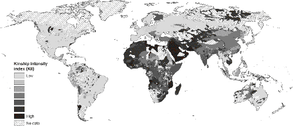
Figure 6.1 maps the Kinship Intensity Index for over 7,000 ethnolinguistic groups around the globe, with darker shading indicating more intensive kin-based institutions. The Americas, for example, are now populated mostly by people whose kin-based institutions derive from historical European communities. Hence much of the Americas are assigned KII values traceable to Europe. The darker patches in South America, however, generally represent contemporary indigenous populations.3
This index has two main shortcomings. First, the underlying Atlas data derive from anthropological reports of local social norms. Consequently, the KII doesn’t necessarily capture what people were actually doing on the ground—their behavior. To check that the ethnographic data captured in the Atlas actually do represent enduring behavioral patterns, we studied the relationship between our KII and the genetic relatedness among these populations based on DNA samples from a few hundred groups. We found that the higher a group’s KII value, the higher their genetic relatedness (even after statistically controlling for other factors that might influence relatedness). This is precisely what we’d expect if the reported stable social norms were really influencing people’s behavior over centuries—culture leaves fingerprints in the genome.4
The second shortcoming is that, as an index, the KII rolls together several different aspects of kin-based institutions, so we can’t tell which features of intensive kinship are doing the psychological work. Is it the prohibitions on cousin marriage, or the ban on polygynous unions? Of course, I suspect that all of the elements in our index play some role (that’s why we put them in there), but it would be nice to see the effects of individual customs. To address this issue, I’ll also use data on the percentage of actual marriages to cousins or other close relatives. When we compare countries, we’ll use the percentage of marriages to blood relatives who are second cousins or closer (mapped in Figure 5.2). I’ll call this measure the “prevalence of cousin marriage,” or just “cousin marriage.” These rates are based on data from the 20th century and usually predate our psychological measures by at least a few decades.
Cousin marriage is particularly important, and worth singling out, because it represents one of the key differences that distinguish the Western Church’s marriage policies from those of the Orthodox Church. While the Western Church obsessively sought to stamp out all marriages to even distant relatives for centuries during the Early and High Middle Ages, the Orthodox Church only sluggishly imposed some constraints and seemed unenthusiastic about enforcement.
To link these measures of kinship intensity to psychological differences, we’ll look at three kinds of psychological outcomes. First, whenever possible, I’ll analyze laboratory experiments or carefully crafted psychological scales. These provide our best measures of psychological variation, though they aren’t usually available for many countries. To supplement these measures, we’ll examine questions from global surveys that tap similar aspects of psychology. These surveys provide lots of data, often from hundreds of thousands of people in many countries, so we can statistically control for the effects of potentially important factors besides kinship intensity that might influence people’s psychology, such as those related to climate, geography, religion, and disease prevalence. In some cases, we’ll also be able to compare the psychology of immigrants living in the same country by using the kinship intensity from either their country of origin (where they emigrated from) or their ethnolinguistic groups. Finally, whenever possible, we’ll look at real-world behavioral patterns related to the psychological attributes captured in the experiments and surveys. This is important because it shows that the psychological differences we are studying influence real life in important ways.
The nature of kin-based institutions affects how we think about ourselves, our relationships, our motivations, and our emotions. By embedding individuals within dense, interdependent, and inherited webs of social connections, intensive kinship norms regulate people’s behavior in subtle and powerful ways. These norms motivate individuals to closely monitor themselves and members of their own group to make sure that everyone stays in line. They also often endow elders with substantial authority over junior members. Successfully navigating these kinds of social environments favors conformity to peers, deference to traditional authorities, sensitivity to shame, and an orientation toward the collective (e.g., the clan) over oneself.
By contrast, when relational bonds are fewer and weaker, individuals need to forge mutually beneficial relationships, often with strangers. To accomplish this, they must distinguish themselves from the crowd by cultivating their own distinct set of attributes, achievements, and dispositions. Success in these individual-centered worlds favors the cultivation of greater independence, less deference to authority, more guilt, and more concern with personal achievement.
This sounds plausible, but is it indeed true that societies with intensive kin-based institutions have tighter norms? A research team led by the psychologist Michele Gelfand has developed a psychological scale to assess the normative “tightness” of societies. Societies that are relatively “tighter” (vs. “looser”) are governed by numerous and contextually sensitive norms that are strictly enforced. The team’s questionnaire asks for people’s level of agreement or disagreement with statements like “There are many social norms that people are supposed to abide by in this country” and “In this country, if someone acts in an inappropriate way, others will strongly disapprove.” Based on data from thousands of participants, Figure 6.2 shows that the greater the KII (Panel A) or the higher the prevalence of cousin marriage (Panel B), the “tighter” the society feels. The variation captured on these plots runs from “loose” places like Venezuela to “tight” spots like Pakistan.
You are about to see a bunch of paired plots like these, so here are some guidelines for understanding them. First, for this entire section on kinship intensity, the vertical axes on each set of plots will always be the same, making it easy to compare the psychological effects of the KII and cousin marriage side by side. Second, when the actual values being represented are only meaningful relative to other values, as with the KII, I’ve left them off the plot to avoid distraction. What matters in these cases are the relative positions of different populations on the plot. However, whenever the values can be easily understood or add concreteness, I’ve left the numbers on. Cousin marriage, for example, uses the actual percentages of marriages to close relatives, so those appear on all plots. Third, because of how cousin marriages bind communities together, the effects are best seen on a logarithmic scale. If you don’t know much about logarithmic scales, don’t worry; you can read the actual percentages on the horizontal axis. The simplest way to understand what the logarithmic scale does is to realize that the impact (on both the social world and people’s psychology) of increasing the prevalence of cousin marriage from zero to 10 percent is much bigger than the effect created by increasing it by the exact same amount from 40 percent to 50 percent. A little cousin marriage goes a long way. Using a logarithmic scale allows us to visualize this more easily.6
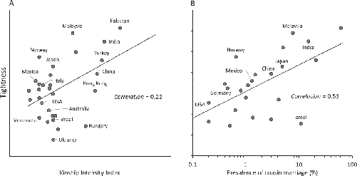
Do kin-based institutions—perhaps through the tightness that they create—influence people’s inclination toward conformity, such as that assessed by the Asch Conformity Experiment (Figure 1.3)? In Asch’s line judgment task, university students from diverse countries had to decide if they’d publicly give the objectively correct answer, based on judging the lengths of line segments, or conform to the incorrect views expressed by those who had responded just before them—recall that these individuals were actually confederates of the experimenter who, posing as participants, had coordinated to give the same wrong answers on certain critical trials. Figure 6.3 plots our two measures of kinship intensity against the percentage of people who went along with their apparent peers and gave the incorrect responses in public. The data show that students from societies with weaker kin-based institutions are more willing to publicly contradict their peers and give the correct answer—that is, they are less conformist. People’s inclination to conform to the incorrect answer goes from about 20 percent in societies with the weakest kin-based institutions to 40–50 percent in societies with the most intensive kinship. Notably, for cousin marriage (Figure 6.3B), we have data for only 11 countries, and lack data for the most conformist populations (seen in Figure 6.3A). Despite this truncated sample, a strong relationship still shows through.
The problem with the data on Asch Conformity and “tightness” is that they come from a small number of countries. To capture a broader swath of humanity, let’s consider two questions about people’s adherence to tradition and the importance of obedience from a global survey—the World Values Survey. The first question asks people to rate on a scale from 1 to 7 how similar they are to the person described in this statement: “Tradition is important to her/him. She/he tries to follow the customs handed down by her/his religion or her/his family.” The second question allows us to calculate the percentage of people in each country who think that it’s important to inculcate “obedience” in children. The data show that countries with higher KII values or more cousin marriage report on-average stronger adherence to tradition and place greater value on inculcating obedience in children—the correlations range from 0.23 to 0.52 (Appendix Figure B.1). The effects are substantial: e.g., cutting the cousin marriage rate from 40 percent to near zero takes us from Jordan, where most of those surveyed (55 percent) report “obedience” as crucial for children, to the United States, where less than a third of people (31 percent) highlight obedience.8
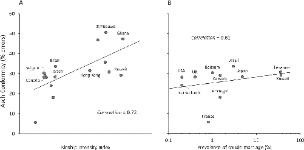
The emotional underpinnings of conformist behavior, obedience to authority, and adherence to tradition likely involve shame and guilt. In the Asch Conformity Task, for example, people may feel shame when they contradict their peers in public or they may feel guilt for caving in to peer pressure and giving the incorrect answer. In Chapter 1, we saw that people from more individualistic countries report more guilt-like experiences than do those from less individualistic countries. Re-analyzing the data, Benjamin Enke subtracted the number of shame-like experiences from the number of guilt-like experiences for each participant. He found that the more intense the kin-based institutions in a country, the more shame-like experiences people reported relative to guilt-like ones. By contrast, people from societies with weak kinship reported lots of guilt-like experiences but almost no shame-like ones. Guilt seems to be the primary emotional-control mechanism in societies lacking intensive kinship.9
The data on shame and guilt are based on self-reports by university students and may not capture the actual (unspoken) emotional experiences of most people from those populations. To tackle these issues, Benjamin analyzed data based on Google searches that included words for “shame” and “guilt.” Studying Google searches allows us to aggregate a wider range of people than is otherwise possible, although we don’t know exactly how wide. In addition, something about the online environment seems to remove people’s concerns about being monitored by others, even though everything you do on the internet is logged. Prior work shows that people will ask Google just about anything, from questions about “having sex with stuffed animals” to concerns about the shape of their penis or the smell of their vagina.
With this as background, Benjamin used translations of “guilt” and “shame” from nine languages to gather data on the frequency of Google searches involving these terms in 56 countries over the preceding five years. By comparing only people searching in the same languages but from different countries, Benjamin’s analysis reveals that countries with more intensive kin-based institutions searched for “shame” more frequently than “guilt” compared to those living in countries with less intensive kin-based institutions (Appendix Figure B.2). In short, societies with weak family ties seem guilt-ridden but nearly shameless.10
Pulling together several elements in the individualism complex, let’s close this section by looking at Hofstede’s famed measure of individualism, which is mapped in Figure 1.2. Recall that this omnibus measure of individualism integrates questions about personal development, achievement orientation, independence, and family ties. Figure 6.4 shows that countries with less intense kin-based institutions are more individualistic. To see the power of kinship, consider that pushing down cousin marriage prevalence from 40 percent to zero is associated with an increase of 40 points on individualism (going from India to the United States, say).
Notice that in Figure 6.4A, countries high on KII are always low on individualism, but those low on KII span the full range of individualism. Many of the countries that have both low KII and low individualism are in Latin America. This suggests that breaking down intensive kinship opens the door to developing the full individualism complex, but that other institutions—and perhaps other factors—are necessary to really drive up individualism. We’ll explore some of these additional factors beginning in Chapter 9.11
The associations I’ve shown you so far, between psychology and kinship intensity, are precisely the kinds of relationships predicted by the ideas I’ve been developing in this book. However, such simple correlations in cross-country data should be regarded with skepticism. To begin to chip away at concerns that such correlations might be misleading, our team took advantage of the larger samples available for outcomes such as individualism, adherence to tradition, and obedience. We wanted to statistically control for potential confounding factors—variables that might create the observed correlations by, for example, making people more conformist while also intensifying kinship. Building on prior work, we studied the impact of over a dozen different control variables. To deal with differences in geography, ecology, and agricultural productivity, we considered measures of terrain ruggedness, distance to navigable waterways, agricultural productivity, irrigation, disease prevalence, latitude, and time since the adoption of agriculture. To address the possibility that religion might be the real driver, we controlled for religiosity and only compared major religious denominations to each other—Catholic countries with Catholic countries, etc. Of course, as I’ll show below, the Church has indeed had a major impact on kinship intensity, but these analyses nevertheless confirm that we can still detect the impact of kinship intensity even when we only look within religions and compare countries of similar religiosity. I’ll say more about this below, but overall, most of the simple correlational results you’ll see in this chapter remain even when these control variables are statistically held constant. In the next chapter, the analyses of variation within Europe, China, and India will help further pin down the nature of these relationships.
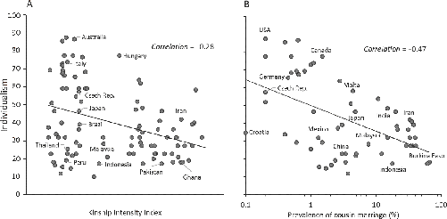
By the start of the first millennium CE, universalizing religions had emerged across the Old World. These religions were now, to varying degrees, outfitted with ethical codes, afterlife incentives, notions of free will, and some degree of moral universalism. However, their ability to influence behavior was restrained because both the masses and the elite remained fully embedded in, and dependent on, intensive kin-based institutions. These tight kinship networks instill people with a sense of identity and strong loyalties that often outweighed those of universalizing religions. My favorite expression of this hierarchy of personal commitments comes from Wali Khan, a Pashtun politician in Pakistan. At a time of national instability in 1972, Khan was asked about his personal identity and “first allegiance” during an interview. He replied, “I have been a Pashtun for six thousand years, a Muslim for thirteen hundred years, and a Pakistani for twenty-five.”12
The Pashtun are a segmentary lineage society, and thus what Khan was saying is that his lineage comes well before both Islam and Pakistan. In fact, his dates suggest that his lineage was four to five times more important than his universalizing religion, Islam, and 240 times more important than his country, Pakistan. It’s also worth highlighting his poetic phrasing, “I have been a Pashtun for six thousand years …” Since Khan was only in his 50s at the time of the interview, he apparently sees himself as merged into a continuous chain of being that stretches back for some six millennia.
Khan’s comment underlines a point that I made in Chapter 3: clans and other intensive kin-groups have norms and beliefs that foster in-group solidarity, intense cooperation within a relatively tight circle, and duties that persist across generations. Many features of kin-based institutions promote a sense of trust that depends on interconnectedness through a web of personal relations and strong feelings of in-group loyalty toward one’s network. People come to rely heavily on those they are connected to while fearing those they aren’t. Intensive kinship thus breeds a sharper distinction between in-groups and out-groups, along with a general distrust of strangers.13
In light of these institutional differences, we should expect people from communities with more intensive kinship to make sharper distinctions between their in-groups and everyone else, resulting in a general distrust of strangers and anyone outside of their relational networks. To assess this, we used an approach from economics that integrates six questions from global surveys that ask people how much they trust (1) their families, (2) their neighbors, (3) people they know, (4) people they’ve met for the first time, (5) foreigners, and (6) adherents of religions other than their own. Using these data, we created an in-group trust measure by averaging people’s responses to the first three questions, about family, neighbors, and people they know. Then, we created an out-group trust measure by averaging the second three questions, about new people, foreigners, and adherents of other religions. By subtracting the first measure, in-group trust, from the second measure, we arrived at what I’ll call Out-In-Group Trust. Mapped in Figure 6.5, Out-In-Group Trust provides the best measure of impersonal trust from surveys. To be clear, the actual values of Out-In-Group Trust are generally negative, meaning that everyone trusts their family, neighbors, and people they know more than strangers, foreigners, etc. But in some places, strangers are treated relatively more like family and friends than in other places. Unfortunately, we are again lacking data for most of Africa and much of the Middle East, which means that we are surely not capturing the full spectrum of global variation.
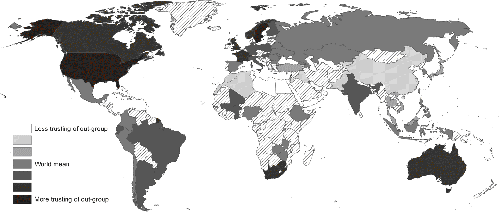
The higher a country’s KII or cousin marriage, the more people distrust strangers, new people, and adherents of other religions (Figure 6.6). The relationship is particularly strong for cousin marriage, where going from the lowest to the highest rates takes you from the impersonal trust levels in the United States to those lying somewhere between Kuwait and Iraq. As with the individualism measures above, these relationships persist even after statistically holding constant the influence of a host of ecological, climatic, and geographic factors as well as those related to religion and national wealth.
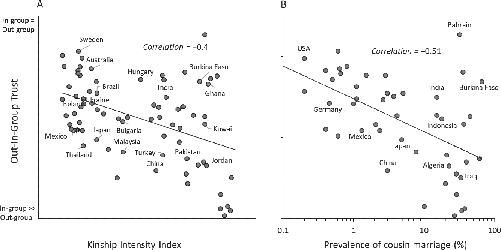
Exploring this more deeply, here’s a cool trick that allows us to compare the Out-In-Group Trust expressed by individuals currently living in the same country who originally came from different countries. From the global survey, Benjamin pulled out the 21,734 first-generation immigrants. Then, using their reported ethnicity, he matched each immigrant to the KII of their ethnolinguistic group from the Atlas. His results tell the same story as that illustrated in Figure 6.6: immigrants living in the same country show higher levels of trust in strangers, foreigners, and people from other religions compared to their family, neighbors, and acquaintances if they originally came from populations with less intensive kinship. These relationships are unlikely to be due to economic or demographic differences among immigrants, because they persist even when individual differences in income and education are statistically held constant.15
Intensive kin-based institutions cultivate moral motivations and standards for judging others that are more strongly rooted in in-group loyalty and less focused on impartial principles. To see this, let’s start with the Passenger’s Dilemma (mapped in Figure 1.6). This study asked corporate managers around the world if they’d be willing to give false testimony in court to help a friend avoid prison for driving recklessly. Universalistic responses, indicating a nonrelational morality, are those in which people were unwilling to give false testimony and felt it would be wrong for their friend to ask them to lie. The alternative answer, where participants said they’d lie and felt it was fine for their friend to ask, is labeled as the particularistic or relational response, though it’s also about in-group loyalty.
Figure 6.7 shows that the higher the rate of cousin marriage in a country, the more willing managers were to give false testimony in court. Here, cutting the rate of cousin marriage from 10 percent to near zero increases the percentage of corporate managers who would refuse to help a friend. The number goes from under 60 percent to about 90 percent. Note, I’ve dropped the companion KII plot here because there’s little variation in the KII across this small sample, so there’s not much to see.
Complementing these results, data from the World Economic Forum reveal that executives from countries with stronger kin-based institutions hire more relatives into senior management. WEIRD people call this “nepotism,” but others call it “family loyalty” and consider it a smart way to get trustworthy employees.16
To get beyond the elite—managers and executives—let’s also look at data collected at yourmorals.org using the Moral Foundations Questionnaire (MFQ) developed by the psychologists Jon Haidt and Jesse Graham to study differences in morality. Using the MFQ, Jon and Jesse have shown that you can capture much of human morality along five major dimensions, or what they call “foundations.” The five foundations involve people’s concerns about (1) fairness (justice, equity), (2) harm/care (not harming others), (3) in-group loyalty (helping one’s own), (4) respect for authority, and (5) sanctity/purity (adhering to rituals, cleanliness, taboos, etc.).
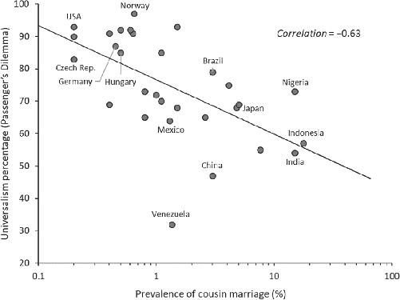
Using MFQ data collected online from 285,792 respondents from 206 countries, Benjamin conducted three kinds of analyses. First, he pulled out the in-group loyalty foundation. This foundation is based on asking people to specify their degree of agreement with statements like “People should be loyal to their family members, even when they have done something wrong.” The results show that people from countries with higher KII scores were more morally concerned about in-group loyalty. Second, Benjamin created a measure by combining people’s scores on the two universal dimensions of morality, involving the fairness and care/harm dimensions, and then subtracted the two more tribal dimensions, in-group loyalty and deference to authority. The idea here is that kin-based institutions strongly favor both in-group loyalty and deference to traditional authorities while suppressing universalizing or impartial notions of fairness as well as care and harm. Here, those with more intensive kinship cared relatively less about universal morality and focused more on in-group loyalty and deference to authority.18 Finally, Benjamin pulled out the 26,657 immigrants (from nearly 200 countries) who had responded to the MFQ online. By matching each person to the KII of their country of origin, he compared only those currently living within the same country—facing the same governments, police, safety nets, etc. This analysis confirms the above cross-country comparisons: even within the same countries, people coming from places with more intensive kinship continued to care more about in-group loyalty and less about nonrelational morality.19
Overall, these findings from the Moral Foundations Questionnaire converge with those we examined using both the Passenger’s Dilemma and nepotism surveys. From these results, a picture is emerging. But, this could be just how people talk about morality. We need to know if these apparent psychological differences, based on surveys, hold up when money, blood, and other precious things are on the line.
Upon entering the economics laboratory, you are greeted by a friendly student assistant who takes you to a private cubicle. There, via a computer terminal, you are given $20 and placed into a group with three strangers. Then, all four of you are given an opportunity to contribute any portion of your endowment—from nothing to all $20—to a “group project.” After everyone has had an opportunity to contribute, all contributions to the group project are increased by 50 percent and then divided equally among all four group members. Since players get to keep any money that they don’t contribute to the group project, it’s obvious that players always make the most money if they give nothing to the project. But, since any money contributed to the project increases ($20 becomes $30), the group as a whole makes more money when people contribute more of their endowment. Your group will repeat the interaction for 10 rounds, and you’ll receive all of your earnings in cash at the end. Each round, you’ll see the anonymous contributions made by others and your own total income. If you were a player in this game, how much would you contribute in the first round with this group of strangers?
This is the Public Goods Game (PGG). It’s an experiment designed to capture the basic economic trade-offs faced by individuals when they decide to act in the interest of their broader communities. Society benefits when more people vote, give blood, join the army, report crimes, follow traffic laws, and pay taxes. Individuals, however, may prefer to skip voting, dodge taxes, develop “bone spurs” (dodge military service), and ignore posted speed limits. Thus there’s conflict between the interests of individuals and those of the larger society.20
When researchers first did the PGG among WEIRD university students, they found that players contributed much more than would be expected if everyone was rational and self-interested. In other words, the canonical expectation from game theory, or what I’ll call the Homo economicus prediction, substantially underestimated people’s cooperative inclinations. This was a key insight, but the problems arose when researchers quickly generalized their student findings to our entire species—Homo economicus transformed into Homo reciprocans, in one memorable coinage.21
As you might anticipate, the behavior of WEIRD students turned out to be particularly unusual when placed in a broader perspective. In 2008, Benedikt Herrmann, Christian Thöni, and Simon Gächter took the PGG global, administering it to university students in 16 cities around the world. In every city, participants faced the same computer screens (with the content appropriately translated) and made anonymous decisions about the same sums of money, which were matched in “buying power” across countries. Despite creating essentially identical contexts and monetary incentives in these different cities, the research team still found substantial variation in people’s willingness to cooperate anonymously with strangers.
Using these PGG data, Figure 6.8 reveals that societies with more intensive kin-based institutions contribute less on average to the group project in the first round. I like to look at people’s initial contributions, because players make these decisions without seeing what the other players will do. The vertical axis gives the average contributions in each country as a percentage of participants’ endowments (100 percent is giving all their endowment). For both KII and cousin marriage, increasing kinship intensity from its lowest to highest value drops people’s initial cooperative contributions from about 57 percent down to nearly 40 percent. Although these differences might not seem particularly big, they anticipate the much larger differences that develop and compound over several rounds of interaction, especially when individuals have opportunities to punish each other—as we’ll see.22
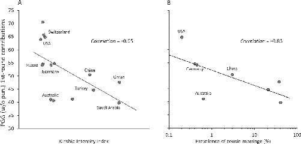
Let’s turn from carefully controlled laboratory economic games to a real-world public good, blood donations. Such donations represent a classic public good, since they are voluntary, costly, anonymous, and helpful to strangers. Everyone potentially benefits from well-stocked blood banks, as we never know when we might suddenly need a transfusion. However, giving blood is costly in terms of time, energy, and pain, so it’s easy for individuals to skip doing it, but then later free-ride on everyone else’s donations when they or their family get injured or sick and need blood. To examine blood donations, our team pulled data from the World Health Organization on unpaid voluntary blood donations for the years 2011–2013. We then calculated the frequency of donations per 1,000 people per year for 141 countries.23
Figure 6.9 shows that people from countries with intensive kinship rarely contribute blood anonymously and voluntarily. In fact, while those from countries with weak family ties give about 25 donations per 1,000 people (per year), countries with the highest KII donate almost no blood to strangers. Similarly, countries with low rates of cousin marriage give about 40 donations per 1,000 people, while those with high rates of cousin marriage make few donations. Notably, these results hold independent of the geographic, ecological, and religious variables discussed above.24
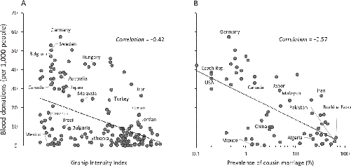
Figure 6.9A reveals a similar pattern to that shown for individualism in Figure 6.4. While intensive kinship is strongly associated with quite low frequencies of blood donations, weak family ties do not guarantee high rates of donations—societies without intensive kinship show a great deal of variation. Thus less intensive kinship opens the door to impersonal norms rooted in a universalizing morality—about blood donations, in this case—but weak kinship alone doesn’t get you through the door.
It’s easy to think up economic or other nonpsychological reasons why people might not donate much blood in places like Burkina Faso and China; but, what is clear is that the patterns for blood donations parallel those we find for contributions in the PGG, where most of these nonpsychological explanations don’t apply. In the PGG, everyone was well educated, understood the situation, faced the same monetary incentives, and was explicitly given a convenient opportunity to contribute. Yet people’s tendency to contribute to public goods involving strangers in the laboratory was strongly negatively correlated with kinship intensity, following the same pattern observed in the real world for anonymous blood donations.
Many public goods situations don’t feel like “real cooperation,” because no one is being directly affected by people’s failure to contribute. For example, when people swipe printer paper from their employer’s copy room, park in front of a fire hydrant while they dash into a pharmacy, cheat on their taxes, or submit personal receipts as business expenses, no one seems to be overtly harmed, though businesses and public safety are collectively damaged. To isolate this in the laboratory, let’s return to the Impersonal Honesty Game (Chapter 1), where participants rolled a six-sided die and were paid cash in proportion to their reported outcome. A roll of 1 was worth the smallest amount of money, 5 was worth the most, and 6 was worth nothing at all. Analyzing this data, Figure 6.10 shows that university students from countries with more intensive kin-based institutions reported many more high rolls. Following the trend line, the percentages of high rolls go from about 65 percent in populations without intensive kinship to nearly 80 percent on average in places with intensive kinship.
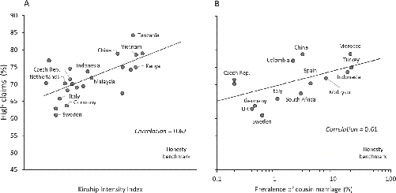
The Impersonal Honesty Game mirrors real situations in which people can either follow impartial rules or break them for direct personal benefits. Capturing this dilemma in the real world, Chapter 1 described the natural experiment created by bringing diplomats from countries around the world to the United Nations in New York City and giving them diplomatic immunity from parking violations. By blocking narrow streets, driveways, and fire hydrants, parking scofflaws gain personal benefits in time and money while at the same time inconveniencing and sometimes even endangering the rest of the populace (strangers). Can the kinship intensity of the diplomats’ home countries explain their parking behavior?
Indeed, diplomats from countries with strong kin-based institutions accumulated many more unpaid parking tickets than diplomats from countries with weak kin-based institutions (Figure 6.11). In fact, using either the KII or cousin marriage, countries with weak family ties received about 2.5 tickets on average per member of their diplomatic delegations, while those from countries with powerful kin-based institutions received 10 to 20 tickets per member of their delegations—so 5 to 10 times more unpaid parking tickets.25
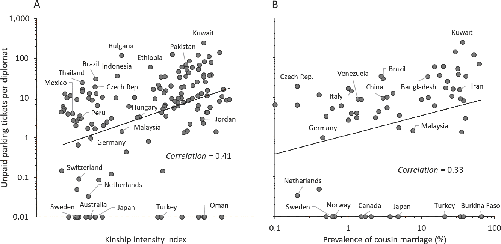
All known societies depend on some form of sanctioning to sustain social norms. In kin-based institutions, norm-violators are typically punished either by their own family members or by traditional authorities, such as clan elders. For example, in many clan communities, if a young man steals from another village or a young woman repeatedly dresses inappropriately, they might be beaten by their father’s older brother as punishment. Clans often protect their collective reputation by punishing misbehaving members—older brothers and uncles have strong incentives to not only beat their errant subordinates but also to leave some visible marks, so that other clans can notice and feel confident that the misdeed was punished. However, if someone from another clan were to merely yell at the thief or sartorial offender, we’d have a problem that could end in violence. An outside attack on, or even a criticism of, one clan member can constitute an insult to all members. By contrast, in societies with weak kinship, strangers can reprimand each other as individuals, point out violations, and even call the police, if necessary, without risking an honor-driven retaliation from the norm-violator’s entire extended family. In short, while the use of violence isn’t usually condoned, individuals in societies without intensive kinship readily admonish norm-violators, even when they are strangers. Let’s call this third-party norm enforcement.
Notice the difference here in the types of punishment. In intensive kin-based societies, you can punish a member of your own group to help preserve your group’s reputation, or you can seek revenge against another group for misdeeds against your group. But, you’d never interfere in interactions among strangers, and you’d be annoyed if some stranger poked his or her nose into your business. For example, you’d never interfere if you saw one stranger stealing from a different stranger—for all you know, it’s payback for a prior affront between families. By contrast, in societies with weak family ties, seeking revenge is frowned upon and certainly not a source of honor or status. However, people think it’s appropriate, or even admirable, to trip a purse snatcher fleeing from the police, or to physically constrain an unknown husband from beating his wife. When it comes to punishing strangers or out-group members, we need to distinguish third-party norm enforcement from revenge-driven actions. Both can be honorable and moral acts within their cultural milieus.
In the Public Goods Game described above, Herrmann, Thöni, and Gächter stumbled across these differences in motivations for punishment. In addition to the experiment discussed, they also conducted another version, one that gave players a chance to punish others in their group. In this version, after participants had all made their contributions to the group in a particular round, everyone got to see (anonymously) the amounts contributed by others and were given the opportunity to pay to take money away from other players. Specifically, for each dollar a person paid from their own account, the experimenter would take three dollars away from the targeted player.
When this experiment is done with WEIRD people, these punishment opportunities have a potent effect on cooperation. Some WEIRD people punish free riders, and then these low contributors respond by contributing more. Over repeated rounds, people’s willingness to punish drives up contributions along with the group’s total payoffs. In the long run, these peer-punishing opportunities lead to higher overall payoffs.26
This, however, isn’t what happens at universities in the Middle East or eastern Europe. Indeed, some participants in these places did punish low contributors. But, low contributors who got punished often retaliated in later rounds, apparently seeking vengeance by trying to strike back at the high contributors whom they suspected had punished them. Of course, the experiment was designed to make this difficult—punishments were delivered anonymously. Undeterred and fired up, however, low contributors from these places still struck out blindly at high contributors, punishing them in later rounds. This phenomenon, it turns out, is actually common around the globe, but so rare among WEIRD students that it was initially written off as just part of the randomness inherent in human behavior. The consequences of this retaliatory response were sometimes so powerful that opportunities to punish entirely inhibited the cooperation-inducing effects of allowing peers to monitor and sanction each other.27
People’s inclinations toward these two styles of punishment are strongly associated with kinship intensity. The easiest way to analyze these patterns is to take the amount of third-party norm enforcement from each population, where individuals punished those making contributions lower than their own, and then subtract it from the amount of vengeful punishment, where individuals punished those who made higher contributions than themselves. As expected, the higher the kinship intensity in a country, the more revenge-driven punishment people engage in relative to the amount of third-party norm enforcement.28
These differences in motivations to punish generate even bigger differences in cooperative contributions over repeated interactions. The greater a country’s KII or prevalence of cousin marriage, the lower the average levels of cooperative contributions in the Public Goods Game over 10 rounds (Figure 6.12). Average contributions go from about 40 percent in places with the most intensive kinship, such as Saudi Arabia or the Sultanate of Oman, to 70–90 percent in places with the weakest families, like the United States or Switzerland.29
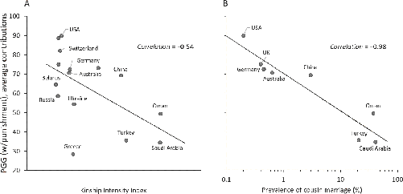
There’s a deep lesson in these results. By adding the option to punish fellow group members in the PGG, economists had thought they’d figured out a way to generate high levels of cooperation in humans. But, this “policy fix” worked best on WEIRD populations because, psychologically speaking, it fits their motivations, expectations, and worldviews. By contrast, in other populations, adding peer punishment to a PGG was a disaster because it provoked revenge cycles, even in the laboratory. These populations did better without this particular “policy fix.” The lesson is simple: policy prescriptions and formal institutions need to fit the cultural psychology of the population in question.
Intensive kin-based institutions bind communities together by intertwining individuals in webs of shared identity, communal ownership, collective shame, and corporate responsibility. In this world, scrutinizing a person’s intentions or other mental states may be less relevant or even counterproductive. In predicting people’s behavior, many contexts are so constrained by social norms and the watching eyes of others that intuiting people’s personal beliefs or intentions won’t help very much. Instead, it’s better to know their social relationships, allies, debts, and obligations. Similarly, in making moral or criminal judgments, the importance of intentions depends on the relationship among the parties involved. In the extreme, intentions may be irrelevant for judging the penalty when someone from one clan murders someone from another clan. If you murder someone in another clan, your fellow clan members will be responsible for paying blood money to the victim’s clan, and the size of this payment won’t depend on whether you killed the guy by accident—your arrow deflected off the deer you were hunting—or by executing a carefully planned homicide. Moreover, if your clan doesn’t pay the prescribed blood money, the victim’s clan will hold all members culpable and seek revenge by killing someone from your clan without regard to the victim’s intentions. By contrast, when ripped from the binding ties of their relational networks, an actor’s intentions, goals, and beliefs become much more important. Without the constraints imposed by intensive kinship, people’s intentions or other mental states tell you a lot more about why they did something or what they are likely to do in the future—so they matter more, and it’s worth attending to them with greater scrutiny.30
In Chapter 1, I told you about a study in which a team of anthropologists gave people living in traditional communities around the world vignettes about characters who either accidentally or intentionally took someone’s bag at a market (“theft”), dumped poison into their village well (“attempted murder”), punched someone (“battery”), or violated a food taboo. We saw that the importance of a person’s intentions in judging a “theft” ranged from a maximum in Los Angeles and Ukraine down to near zero among the Sursurunga on New Ireland in Papua New Guinea and Yasawa Island in Fiji. These judgments combined people’s assessments about how “good” or “bad” the action was, how much it should hurt the perpetrator’s reputation, and how much the perpetrator should be punished. We subtracted their judgments of the perpetrator when the action was intentional from those when it was accidental.31
Now, we can explain much of the variation in the importance of intentionality in judging others. Societies with stronger kin-based institutions at the time of the research paid relatively little attention to people’s intentions in making moral judgments in our vignettes. Figure 6.13 shows the relationship between our measure of the importance of intentionality in judging someone who took something at a busy market (“theft”) and a contemporary measure of kinship intensity that I created to match the KII as closely as possible using data supplied by our team’s anthropologists. This index captures about 90 percent of the variation across these societies in their use of intentions in judging the perpetrator for taking a bag (“theft”). Similar relationships hold for the other domains, particularly for battery and attempted murder. These patterns hold even after accounting for individual differences in formal schooling and the uncertainty of local environments. The impressive strength of these relationships becomes less surprising when we consider that, unlike the businesspeople, online survey takers, and university students in so many of our studies above, people in many of these communities remain embedded in fully functioning kin-based institutions. Yasawans in Fiji, for example, still live in patrilineal clans, obey elders, marry cousins, and corporately control land.32
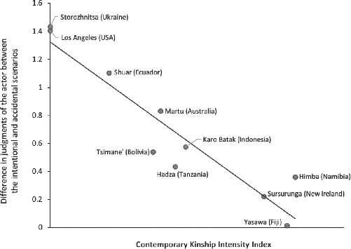
Consistent with their high levels of kinship intensity, pre-Christian European populations likely also lived in a world regulated by shame, not guilt, and placed much less importance on intentionality in moral judgments. Ancient sources like the Scandinavian sagas and the earliest law codes of barbarian tribes make little explicit reference to internal mental states like personal intentions or private guilt, yet they highlight shame or “face” as the central emotion of social control. By dissolving the kin-based institutions of Europe’s tribes, the medieval Church would have bolstered people’s use of mental states in making both moral and legal judgments of others. Later, we’ll consider how these psychological shifts may have influenced the development of Western Law beginning in the High Middle Ages.33
Psychologists have argued that learning to effectively navigate a tightly knit social environment affects how people think about and categorize the nonsocial world. Growing up enmeshed in kin-based institutions focuses the mind on relationships and the interconnections among people; by contrast, those who experience a society with only weak relational ties become biased toward creating mutually beneficial connections with others based on their individual abilities, dispositions, and characteristics. The idea here is that intensive kinship cultivates more holistic thinkers who focus on broader contexts and on the relationships among things, including the interconnections among individuals, animals, or objects. By contrast, societies with less intensive kinship foster more analytically-oriented thinkers who tend to parse the world by assigning properties, attributes, or personalities to people and objects, often by classifying them into discrete categories according to presumed underlying essences or dispositions. In Chapter 1, I discussed the Triad Task, which is used to differentiate analytic from holistic thinking styles. In the task, participants saw sets of three images, such as a hand, winter glove, and wool hat. For each trio, they said whether the target object—for example, the glove—goes with either the hand or the hat. Analytic thinkers like discrete, rule-governed categories, so they’re inclined to put the glove with the hat, as examples of winter clothing. Holistic thinkers, by contrast, look first for relationships, so they’re more inclined to put the hand in the glove.34
People from countries with higher rates of cousin marriage reveal a more holistic thinking style (Figure 6.14). Going from a population where about 30 percent of marriages involve relatives to one in which there’s almost no cousin marriage takes us from communities who engage in predominately holistic thinking (60 percent holistic) to those favoring mostly analytic approaches (62 percent analytic). Note, I’ve omitted the plot using the KII because the 30 industrialized countries for which we have Triad Task data show little variation in KII, so there’s not much to see.35
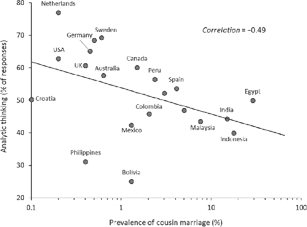
The relationship between kin-based institutions and analytic thinking may illuminate a long-recognized cross-cultural pattern in a perceptual ability called “field independence” (vs. “field dependence”). Field independence captures how good a person is at accurately assessing the size and position of objects in space independent from their background or context. This notion is closely related to the analytic visual processing that I discussed in relation to literacy in the Prelude. Using the Rod and Frame Task, for example, individuals from diverse societies were seated in front of a rod, which was surrounded by a square frame. The experimenter then gradually turned a knob that rotated the rod in space, like the hand on a clock. The participant’s job was to tell the experimenter when the rod reached the vertical position (12 o’clock). The task is made more difficult by first rotating the frame so that it is askew relative to the ground. People who are more “field dependent” struggle to get the rod perpendicular when the frame is askew, and instead are drawn toward aligning the rod with the frame. More field independent people are better at ignoring the frame and aligning the rod vertically. The experiment gives an objective score, the rod’s deviation from the vertical. In the 1960s and ’70s, psychologists found that while traditional farming populations were quite field dependent, there were two distinct populations in the world that were particularly field independent. The first were WEIRD people. Can you guess the other one?
Mobile hunter-gatherers, who possess extensive (not intensive) kin-based institutions, are field independent. Consistent with this, anthropologists have long argued that, compared to farmers and herders who have more intensive kin-based institutions, hunter-gatherers emphasize values that focus on independence, achievement, and self-reliance while deemphasizing obedience, conformity, and deference to authority. Marking this, the kinship terminology adopted in European languages like English, German, French, and Spanish in the wake of the Church’s expansion is the same as that found among many mobile hunter-gatherer populations.36
Overall, the evidence presented above indicates that global psychological variation covaries with intensive kinship in precisely the ways we’d expect if our minds have been adapting and calibrating to the social worlds created by these institutions. For now, it’s enough to appreciate the extent of the psychological variation around the world and to recognize that it patterns in the expected ways. In the next chapter, we’ll look more closely at these relationships and consider a variety of lines of evidence that, when taken together, support the idea that changes in kin-based institutions have indeed driven important psychological differences. But, before we get to that, let’s consider the global relationships between the Church, intensive kinship, and psychological differences.
The links between intensive kinship and psychological differences pose a key question: Why does kinship intensity vary so much around the world?
You’ve already seen part of the answer in Chapter 3: certain ecological conditions favored the development and spread of different forms of food production, including animal herding and irrigation agriculture. Rising populations and the pressure to control territory for food production energized competition among societies, which in turn favored norms that permitted larger communities, broader cooperation, greater production, and better command and control. Eventually, cultural evolution would generate complex chiefdoms and states; but, throughout much of this scaling-up process, kinship intensified in a host of ways. The premodern states that emerged in some places were always built atop a foundation of intensive kinship. So, the differing intensities of kin-based institutions are traceable through a variety of historical pathways back to differences in biogeography, climate, disease prevalence (e.g., malaria), soil fertility, navigable waterways, and the availability of domesticable plants and animals. Of course, the historical details surrounding premodern states matter too, since some states harnessed kin-based institutions and others sought to “push back” against them. These factors, along with others, contribute to global differences in kin-based institutions.37
Here, however, we are interested in the question of whether, and how much, the Church has shaped the global variation in kin-based institutions by examining the relationship between kinship intensity and the duration of exposure to the Church. Then, we’ll ask whether psychological variation can be tracked directly back to medieval Church exposure.
To assess the amount of exposure to the Church’s MFP experienced by different populations, we mapped the expansion of the Church across Europe from roughly 500, when the MFP began to consolidate, to 1500 CE. In compiling this database, we relied primarily on the founding of bishoprics, which were often linked to the conversion of various kings or tribal chiefs to Christianity. Using this information, we calculated the duration of exposure to both the Western and Orthodox Churches. This is important because while the Orthodox Church didn’t go to the extremes of the Western Church and lacked the enthusiastic enforcement often pursued by the Western Church, it did have its own program, a kind of MFP-light (Table 5.3). By subtracting the year when the MFP began from 1500, we get two measures of “church dosage,” one for the Western Church and the other for the Orthodox Church.38
These MFP dosages for Europe permit us to calculate MFP dosages for the rest of the world. To accomplish this, we used a “migration matrix” that estimates the total flux of populations, from country to country, between 1500 and 2000 CE.39 For each country in the world, we (1) look at the composition of its modern national population, (2) track each subpopulation back to where their ancestors were living in 1500, (3) assign this subpopulation an MFP dosage based on its 1500 location, and (4) roll all of these subpopulations back together to generate an aggregate MFP dosage for each modern country. If this seems crude, it is. Fortunately, the MFP’s effect was so big that it still shows through this messiness.40
Let’s first connect the Church to kinship intensity. The data show that the longer a country’s population was exposed to the Church, the weaker its kin-based institutions. Together, the dosages of both the Western and Orthodox Churches explain about 40 percent of the global differences across countries in the KII and 62 percent of the differences in cousin marriage. For comparison, the time since the origins of agriculture accounts for only an additional 18 percent of the variation in KII, and for 10 percent of the differences in cousin marriage across countries. In fact, of all the agricultural, ecological, climatic, geographic, and historical factors that we explored in trying to understand the global variation in kinship intensity, the biggest factor—though not the only—was historical exposure to the Church.41
The effects of the Western Church on reducing the KII are generally stronger than those of the Orthodox Church, but only a little stronger. However, as expected, the Orthodox Church had no effect on the frequency of cousin marriage, so the Western Church is doing all the work there. Each century of Western Church exposure cuts the rate of cousin marriage by nearly 60 percent. This finding fits nicely with the historical record, since cousin marriage—but not polygynous marriage or bilateral inheritance—represents a core difference between the full MFP and the Orthodox Church’s MFP-light.42
Now, let’s look directly at the relationship between Church exposure and psychology. Figure 6.15 shows the effects of higher MFP dosages on the psychological measures examined above. National populations that collectively experienced longer durations under the Western Church tend to be (A) less tightly bound by norms, (B) less conformist, (C) less enamored with tradition, (D) more individualistic, (E) less distrustful of strangers, (F) stronger on universalistic morality, (G) more cooperative in new groups with strangers, (H) more responsive to third-party punishment (greater contributions in the PGG with punishment), (I) more inclined to voluntarily donate blood, (J) more impersonally honest (toward faceless institutions), (K) less inclined to accumulate parking tickets under diplomatic immunity, and (L) more analytically minded.
These effects are large. For example, a millennium of MFP exposure is associated with nearly a 20-percentile-point drop in people’s willingness to go along with the group to give the same wrong answer in the Asch Conformity Task (Figure 6.15B), and a 30-percentile-point drop in people’s willingness to lie in court to help a friend—particularism over universalism (6.15F). Similarly, a millennium of the MFP also raises a population’s individualism from the intensity found in contemporary Kenya to that of Belgium (6.15D), increases voluntary blood donations fivefold (6.15I), cuts people’s willingness to exaggerate their die rolls by half (6.15J), and reduces the number of unpaid parking tickets from nearly seven per member in a diplomatic delegation to only one ticket for every 10 members (6.15K). Similarly, every century of MFP exposure raises people’s inclinations toward analytical thinking by just over 3 percent, taking it from about 40 percent to 74 percent over a millennium (6.15L). Our analyses also show that populations that experienced higher dosages of the Western Church’s MFP are less concerned about inculcating obedience in children and less inclined to hire family into senior management positions (low on family loyalty).43